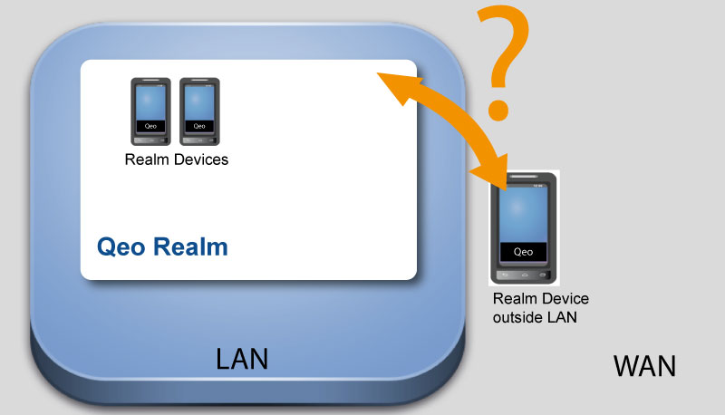
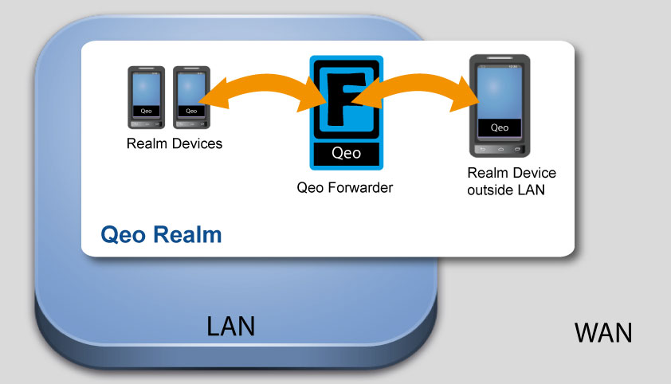
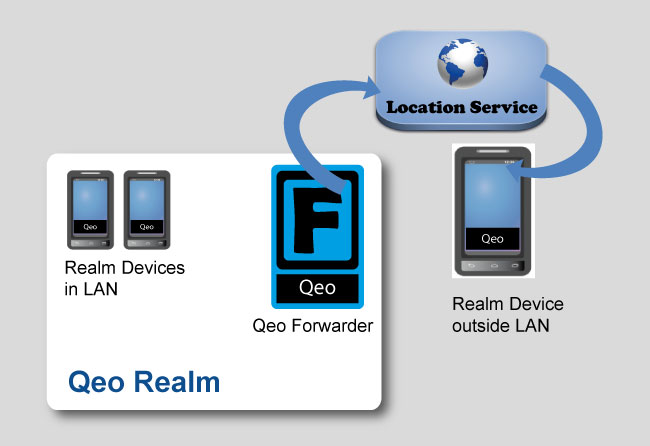
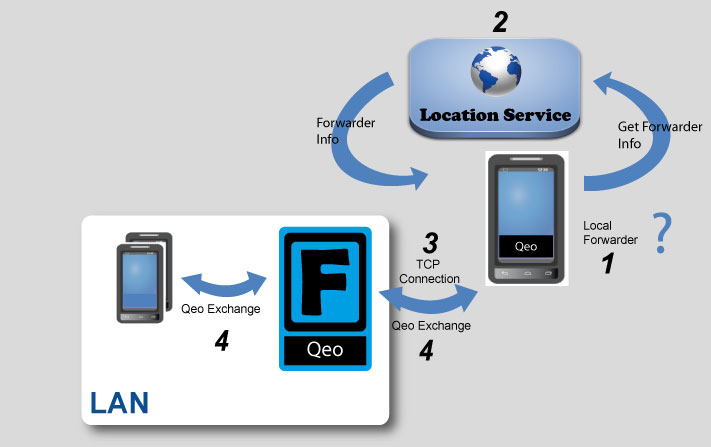

Qeo in a LAN Environment vs a WAN Environment
Qeo-enabled devices in a LAN can discover each other through Qeo's multicasting mechanism. Talking Qeo within a Realm is therefore quite straightforward as long as all these devices are located within the same LAN. Since many devices are mobile devices, they will often move out of the range of that LAN. Without additional provisions, that device will no longer be able to talk to the other devices in the Realm.

In order for Qeo to work outside a home LAN, the device outside the LAN needs to know where and how to talk to the other devices inside the home LAN. This is what the Qeo Forwarder is for.
However, there is no need for a forwarder as long as there are only apps in your LAN.
What is the Qeo Forwarder?
The Qeo Forwarder is basically a domain extender. It is an entity, located in the LAN that:
- Passes Qeo communication from devices on the LAN to devices on the WAN
- Passes Qeo communication from devices on the WAN to devices on the LAN
In order to be able to communicate, all devices on LAN and WAN naturally need to be part of the same Qeo Realm. When a Qeo-enabled WAN device needs to communicate with Qeo-enabled LAN devices over Qeo, it must use the Forwarder. All Qeo interactions occur as if the device was physically present inside the LAN. The Realm is extended over the boundaries of the LAN.

Location Service
A device on the WAN needs to know where and how to contact the Qeo Forwarder. In order to get this information, it contacts the Location Service.

On the highest level, the process is as follows:
When a Qeo Forwarder goes online, it finds out its coordinates (public IP address and port) at which it is available. Alternatively it can use preconfigured coordinates. The Qeo application performs its expected operations independently of whether is has found a Qeo Forwarder or not. If no Forwarder can be found (e.g. no Forwarder configured and the Location Service is unavailable), operation remains confined to LAN borders. If the Qeo Forwarder is found, WAN operation becomes possible.
- The Qeo Forwarder contacts and registers to the Location Service, providing its "coordinates". It also sends out this info to other devices in the Realm.
Qeo app logic
The process is as follows:

- When a Qeo application is started on a device, it will try to setup a connection with the Forwarder in the home LAN (provided there is a forwarder of course). Note that without a forwarder you still have Qeo communication within your LAN.
- A Qeo app has a proven connection with a forwarder when it received a Forwarder topic containing the "coordinates" of the forwarder.
- As long as there is no proven connection with a forwarder, the Qeo app will periodically poll the Location service to get the "coordinates" of the forwarder.
- Based on the obtained "coordinates" of the forwarder, a connection is being set up between the Qeo app and the Forwarder.
3G Scenario
Below is a typical scenario for involving 3G devices and the Qeo Forwarder: In this scenario, we make maximum use of 3G connections. Evidently, this is not the only way to set up your Realm and authenticate your devices. For this scenario, we are using Android devices and QSimpleChat as Qeo Application.
- Create a Realm using a browser on a 3G device.
- Create one or more users in your Realm.
- Authenticate a number of devices using 3G by adding them to a user.
- At this point, your devices are not yet able to chat since they have no Qeo Forwarder information and are not connected to any Realm. Even if you run QSimpleChat, the devices you added will not see each other. In order to have them communicate, connect all of them to the same LAN. It may take a few moments for the Qeo connection to synchronize. If you feel the process is taking too long, you can speed it up by restarting QSimpleChat.
- If you want to have these devices communicate over Qeo outside this LAN, make sure you have a Qeo Forwarder running on the LAN and that it is started. Make sure the device running the Qeo Forwarder has a connection to the Internet so it can register to the Location Service.
- While the devices are connected to the LAN, run QSimpleChat on on all devices.
- All connections and Qeo Forwarder information is now set up. If you move any of the devices outside the boundaries of the LAN, the device will use 3G to contact the Location Service to get the Qeo Forwarder information. It may take a few moments for the Qeo connection to synchronize. If you feel the process is taking too long, you can speed it up by restarting QSimpleChat. You are now able to chat using 3G.
- If your device moves in range of the LAN again, it will switch back to Qeo communication over the LAN and you will chat over a LAN connection.
{kind=link}
{kind=link}
{kind=link}
{kind=link}